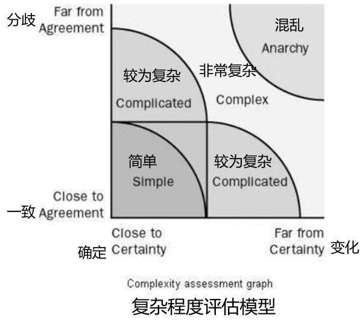
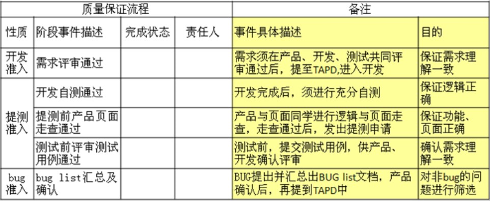
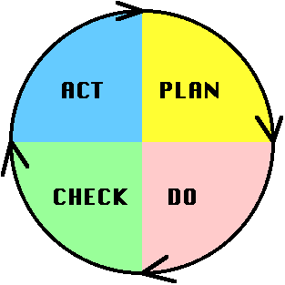
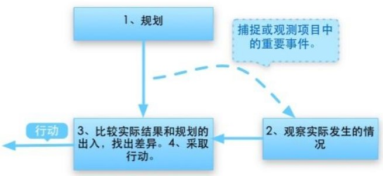

[toc]
《管理3.0 : 培养和提升敏捷领导力》 《Scrum敏捷软件开发》
无流程 -- 反复无常 无管理成本，所有工作都是为了软件产出 人数多了后，开发过程混乱，质量降低 管理者随时提出需求，产品经理考虑不周全 无组织无纪律 写单元测试？没时间。系统太复杂。太简单没必要
强流程 -- 例行公事 繁琐的文档， 大量的规范、标准和管理活动，每一个环节可控 过度的设计 会议多， 成本高，效率低，最要命的是降低团队的主动性、创新性 遵循规范，但是不知道规范背后的道理 写单元测试，但是自己都不知道有没有效果，集中在一起写 为什么写单元测试？更快的反馈 产品质量完全由测试人员保障
现状：复杂系统理论
当过程运行根本机制相当简单的情况下，典型的做法使用预定义建模方式（在做之前把所有东西想清楚），但是过程复杂程度超过预定义的能力范围，我们会选择经验性方式。

经验型过程的3大支柱：可见性、检查及适应
敏捷缺陷或盲点 - 假设每一个人的能力都很强 - 假设每一个都很守纪律
培养团队例子： - 有组织有计划的培养，读书计划，检查，所有的例子用TDD方式写一遍
- 学习性团队：每天早上浙江站会
- 一起Code Review
- 训练营：做题讨论
搭班子、定战略、带队伍
立项书
项目背景、目标/愿景
里程碑
User personal
用户界面原型
业务流程图/技术架构图
粗粒度的功能列表
沟通计划 ：每天/每迭代/每发布
告诉团队项目的管理流程
原则：
详略得当，不要面面俱到
WBS工作任务分解
文档不是目的，思考过程，清楚和透彻
XP、Scrum
变态编程：既然这个东西很好，那么我们就要把它做到极致。
结对编程<--CodeReview，时时刻刻做code review
敏捷Value观
纪律 x 技能 = 能力

团队规则 - 需求评审咋做？ - 如何测试？ - 需求变更规则？
敏捷整个过程都强调反馈
PDCA：Plan(计划)、Do(执行)、Check(检查)和Action(行动)

敏捷PDCA精髓：

站立会议/User Story Wall/燃尽图/回顾会议
反馈的有效性